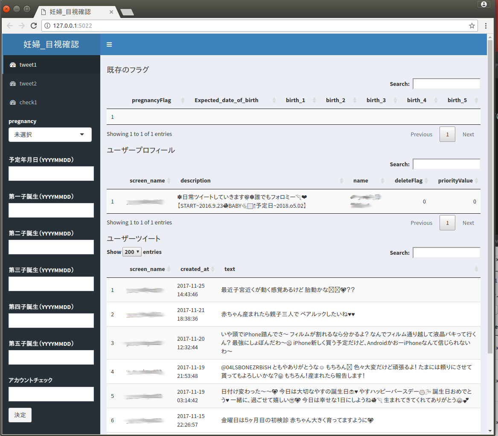
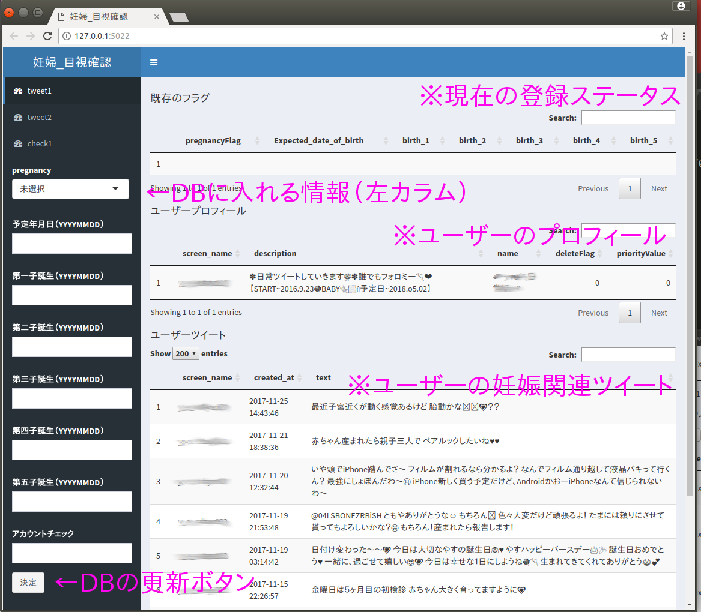
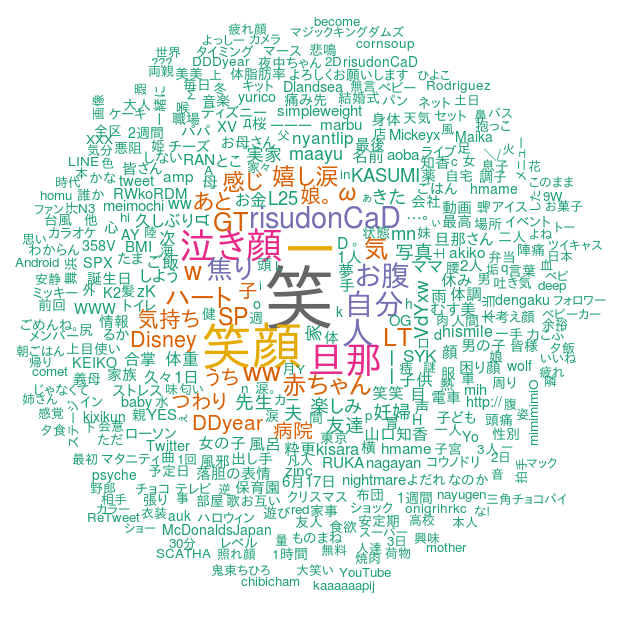
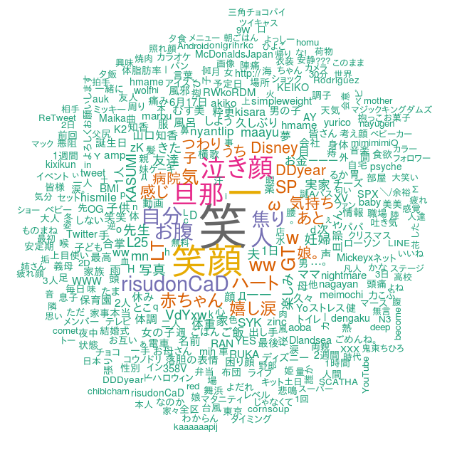
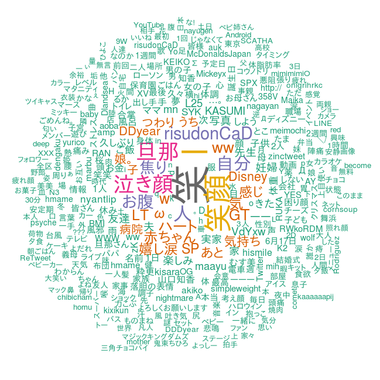

<!doctype html>
<html>
	<head>
		<meta charset="utf-8">
		<meta name="viewport" content="width=device-width, initial-scale=1.0, maximum-scale=1.0, user-scalable=no">

		<title>reveal.js</title>

		<link rel="stylesheet" href="css/reveal.css">
		<link rel="stylesheet" href="css/theme/black.css">

		<!-- Theme used for syntax highlighting of code -->
		<link rel="stylesheet" href="lib/css/zenburn.css">

		<!-- Printing and PDF exports -->
		<script>
			var link = document.createElement( 'link' );
			link.rel = 'stylesheet';
			link.type = 'text/css';
			link.href = window.location.search.match( /print-pdf/gi ) ? 'css/print/pdf.css' : 'css/print/paper.css';
			document.getElementsByTagName( 'head' )[0].appendChild( link );
		</script>
	</head>
	<body>
		<div class="reveal">
			<div class="slides">


				<section data-markdown data-separator="^\n>>>\n$"
				data-separator-vertical="^\n--\n$">


					<script type="text/template">


<!-- パスの書き方でmac とwinの両方対応ができなくなるため、画像は直下に置く -->


## rtweetで、妊婦DBを作ろう
発表者： X_chi


>>>

### ■自己紹介

<font size="6">
<br>
Twitter： X_chi<br>
    （※エックス値 みたいな感じで読んでください）<br>
<br>
・広告代理店勤務<br>
・（一応）データ分析職<br>
・データ下処理、加工、ビジュアライズの業務が多い<br>
・モデリングする機会が少ない<br>
・Tableauを使う同僚のサポート<br>
<br>
・趣味：写真、自転車

</font>

>>>

## ■概要


twitterから妊婦関連のツイートを探し、<br>
妊婦のDBを作ります<br>

--

## ■課題感

・rtweet、SQLite単体の解説ブログは多いが<br>
結合してアプリとして使う際のTipsがなかった<br>
<br>
・簡単なアプリが完成し、簡単な分析結果<br>
も出したが、かなりハマッて苦労した<br>
<br>
・業務でtweet分析をしたいが、解説ブログや<br>
入門書ではデータ蓄積のフェーズが飛ばされがち

--

## ■妊婦のドメイン知識

<font size="6">

・妊婦には悪阻（つわり）がある<br>
・マタママ（マタニティママ）などの<br>
専門用語がある<br>

・妊娠から出産までは40週（280日目が目安）<br>

・出産予定日の確度は高くない<br>

・出産が近くなると、<br>
夫は飲み会に行くと怒られるようになる<br>

</font>

--


--

## ■妊婦のドメイン知識（2）

ドラマ『コウノドリ』<br>
TBS 金曜22時〜<br>
<http://www.tbs.co.jp/kounodori/>

超ビッグノイズ！<br>
→かつての妊婦たちが、このドラマを<br>
みてつぶやいてしまう


>>>


## ■今回使用したRパッケージ

・rtweet<br>
・DBI<br>
・RSQLite<br>
<br>
・shiny<br>
・shinydashbouard<br>
<br>
・Rmd<br>
・RMeCab<br>

>>>


### ■システム構成


>>>

## ■twitterからのデータ取得

--

### ■導入方法
・先人たちの優れた説明を参照しましょう<br>

<font size="4">
twitteRパッケージがdeprecated（廃止予定）になっていたのでいちおう注意しましょう。
<http://notchained.hatenablog.com/entry/2017/01/20/195619><br>
httrのOAuth1.0のバグが直ったのでrtweetもガンガン使っていきましょう
<http://notchained.hatenablog.com/entry/2017/07/25/053842><br>
公式ドキュメント<br>
<http://https://cran.r-project.org/web/packages/rtweet/rtweet.pdf><br>
</font>


--

#### ■rtweetとDBでのデータ蓄積のコツ(1)
<br>
<br>
・rtweetは制御がききにくい<br>
→少量のツイート取得はできない<br>
 →どんぶり勘定を想定したシステム構成にする<br>
<br>
tryCatchでエラーしても<br>
コードは動き続けるようにする<br>

--

#### ■rtweetとDBでのデータ蓄積のコツ(2)
<br>
<br>
・データは必ずDBに入れる<br>
 →条件にもよるが、データは2GBまでは<br>
   増えると考えて組むべき<br>

--

#### ■rtweetとDBでのデータ蓄積のコツ(3)
<br>
<br>
 ・最終的にDBからデータを取得するために、<br>
 あらかじめ分類フラグなどを用意<br>

・最終的に数百MB～ のデータを扱う前提で<br>
考えておくこと

--

#### ■rtweetとDBでのデータ蓄積のコツ(4)
<br>
<br>
ツイートは必ず重複カットしてDBへ入れること<br>
（※最大11GBまで溜めてしまいました。<br>
重複カットすれば1.2GB）<br>
<br>
SQLiteなら、ファイルの<br>
 .gitignore を忘れない！


--

#### ■rtweetとDBでのデータ蓄積のコツ(5)
<br>
<br>
とにかくcrontabで膠着させずに<br>
ユーザーのデータを取得することを目指す<br>


>>>

### ■shinyアプリでのユーザー識別


--

#### ■妊婦識別についての課題

ドラマ：コウノドリをはじめとして、<br>
妊婦以外が、妊娠について<br>
語ることもしばしばある。<br>
<br>
友人、親戚、ペットの話かも？<br>
<br>
→最終的には目grepするしかない！

--

#### ■目grep用のアプリを作って対策

--

<div style="text-align:center;">
  
</div>


--

<div style="text-align:center;">
  
</div>


--


### ■shinyアプリの方針

■リッチにするか？<br>
<font size="6">
処理は全てshinyで書く<br>
アプリらしいアプリ<br>
工数多い<br>
誰でも使える<br>
オンライン<br>
</font>

--

### ■shinyアプリの方針


■素朴にするか？<br>
<font size="6">
最低限の構成で済むようにする<br>
ブラウザにボタンがついただけ<br>
工数少ない<br>
自分しか使わない<br>
オフライン<br>
</font>

--

### ■shinyアプリの方針

→自分の技量と工数で、素朴にした<br>

--

#### ■shinyアプリのコツ（1）
<br>
<br>
トランザクションとの戦い<br>
database is locked<br>
-journalファイルでアクセスできない<br>


--

#### ■shinyアプリのコツ（2）
<br>
<br>
デバッグのしにくさ<br>
→簡単な対策として、printデバッグで頑張る<br>
<br>
cat(file=stderr(),"hoge","huga")


--

#### ■shinyアプリのコツ（3）
<br>
<br>
なぜかタイムゾーンがずれる問題

shiny上でSys.time() を使うと<br>
UTCとなる。<br>
Sys.timezone()はJapanとなるので、<br>
何かしらおかしい様子<br>
→手動で9時間足す

--

#### ■shinyアプリのコツ（4）
<br>
<br>
ブラウザの機能で、いろいろ単純にする<br>

今回なら、再読込（リロード）で<br>
チェックするユーザーを切り替えてます

--

#### ■shinyアプリのコツ（5）
<br>
<br>
dbGetQueryでupdateなどを使い、<br>
エラーを吐く場合、<br>
dbExecuteを使ってみる。<br>
<https://www.rdocumentation.org/packages/DBI/versions/0.5-1/topics/dbExecute><br>


>>>

### ■データ分析結果


妊娠関連語句をつぶやいたユーザー数：14.8万人<br>
上記ユーザーのツイート：240万件<br>
出産予定日が把握できたユーザー：30人<br>
<br>
該当ツイート数：<br>
妊娠初期：2643件<br>
妊娠中期：2247件<br>
妊娠後期：1238件<br>

--

・期間ごとに分けて、<br>
形態素解析＆ワードクラウド

--

妊娠初期（252日前 〜169日前）
<div style="text-align:center;">
  
</div>

--

妊娠中期（168日前〜85日前）
<div style="text-align:center;">
  
</div>

--

妊娠後期（84日前〜出産予定日）
<div style="text-align:center;">
  
</div>


>>>

### ■まとめ

<font size="8">
・rtweetは、例外処理で制御する<br>
<br>
・twitterのデータは膨大<br>
→データの取捨選択軸は先に決めておく<br>
<br>
・shinyアプリは機能の割り切りが大事<br>
<br>
・妊娠中、嫁は不安

</font>

>>>

### 今回の資料の場所とソースコード
<https://github.com/x-chi/lib/tree/master/rlang/tokyoR66LT><br>
<br>
※ソースコードは汎用化できませんでしたので、<br>
参考程度でお願いします<br>


>>>

# enjoy!


					</script><!-- そのままだと書けないので/を余計に書いています -->
				</section>

			</div>
		</div>

		<script src="lib/js/head.min.js"></script>
		<script src="js/reveal.js"></script>

		<script>
			// More info about config & dependencies:
			// - https://github.com/hakimel/reveal.js#configuration
			// - https://github.com/hakimel/reveal.js#dependencies
			Reveal.initialize({
				dependencies: [
					{ src: 'plugin/markdown/marked.js' },
					{ src: 'plugin/markdown/markdown.js' },
					{ src: 'plugin/notes/notes.js', async: true },
					{ src: 'plugin/highlight/highlight.js', async: true, callback: function() { hljs.initHighlightingOnLoad(); } }
				]
			});


 $(function() {
        $('body').on('submit','form',function() {
            var answers = [];
            $('input[type="text"]', this).each(function(){
            answers.push({'name':$(this).data('name'),                       'value':this.value});
            });
            var data = {
                'answers': answers
            };
            json = JSON.stringify(data);
            $('#json').append(json);
            return false;
        });    
    });


		</script>
	</body>
</html>

